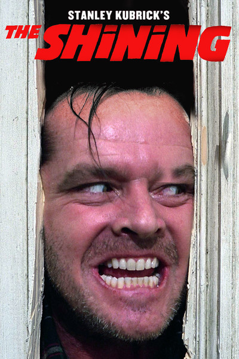
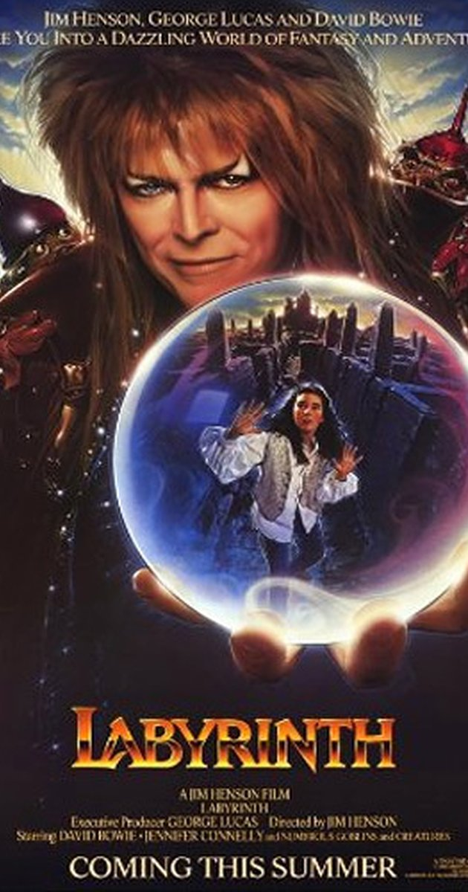
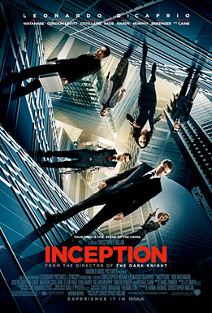

Harry Potter and the Goblet of Fire
Harry finds himself mysteriously selected as an under-aged competitor in a dangerous tournament between three schools of magic. (157 mins.)
The Maze Runner

Thomas is deposited in a community of boys after his memory is erased, soon learning they're all trapped in a maze that will require him to join forces with fellow "runners" for a shot at escape. (113 mins.)
The Shining
A family heads to an isolated hotel for the winter where an evil and spiritual presence influences the father into violence, while his psychic son sees horrific forebodings from the past and of the future. (146 mins.)
Labyrinth
A 16-year old girl is given 13 hours to solve a labyrinth and rescue her baby brother when her wish for him to be taken away is granted by the Goblin King. (101 mins.)
Inception
A thief, who steals corporate secrets through use of dream-sharing technology, is given the inverse task of planting an idea into the mind of a CEO. (148 mins.)